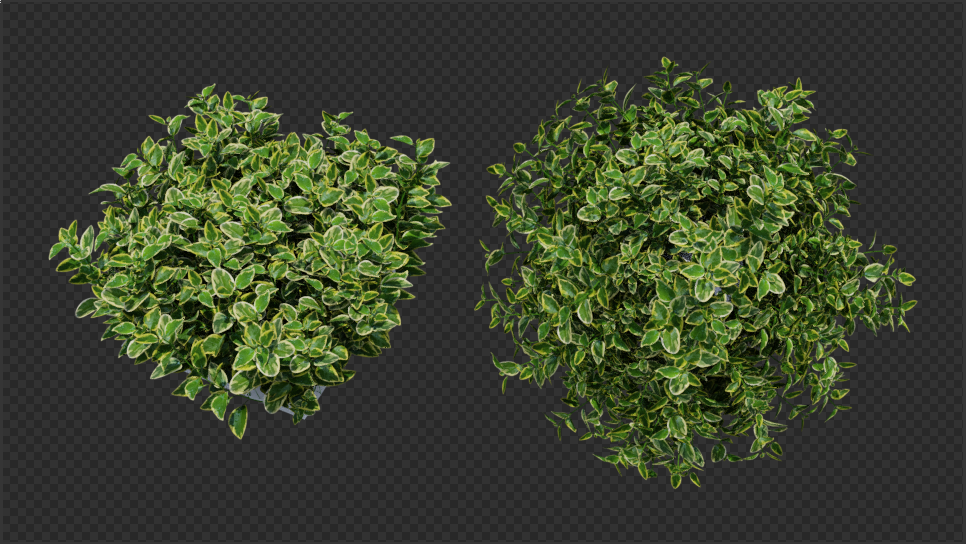

Vinca major variegata is a perennial herbacious plant, which grows to be a small shrub or groundcover.
The model is provided simply as a single "tuft" of leaves. It is expected to be instanced many times and placed in an environment.
Materials
The colours have been calibrated with Macbethcal to an actual Vinca major variegata plant in Australia, but the specularity and roughness values are guessed.
Usage
This Radiance model follows the Radiance Filesystem Hierarchy
Standard. As
such, please run make lib to build the Radiance mesh file. Once done, you can
use this in your scene by:
!xform lib/vinca-major-variegata/obj/model.rad
In order to preserve memory in the occasion of including many instances of this
model, an .oct octree is also provided, and so you can instance it in your
scene as follows:
void instance model
1 lib/vinca-major-variegata/obj/model.oct
0
0
Authors
This model was created by Dion Moult.